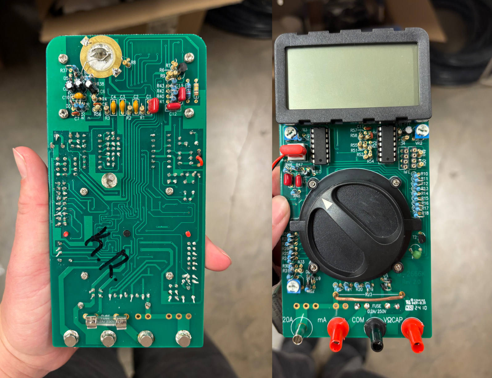

This project involved assembling and calibrating a functional digital multimeter from individual electronic components and a printed circuit board.
I populated the printed circuit board using the provided electrical schematics and component layout. Components were installed and soldered into place while checking orientation and connection quality.
After assembly, the multimeter was calibrated using specified reference values. Adjustments were made until the instrument produced the expected measurements.
Functional testing was performed across the available measurement modes to verify that the assembled multimeter operated correctly and produced accurate readings.
PCB Assembly • Soldering • Electrical Schematics • Calibration • Electrical Testing • Troubleshooting